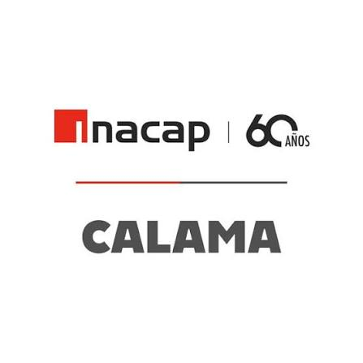

Propuestas de Sostenibilidad
Región de Antofagasta
☰
0
📱 Escanear QR
📋 Ver Propuestas
⛶ Pantalla Completa
📍 Antofagasta
📍 Calama
📍 San Pedro
🔍 Buscar Ciudad
🔒 Modo Administrador
🚪 Cerrar Administrador
Escanea para participar, ingresa tu proopuesta
Cerrar
▶